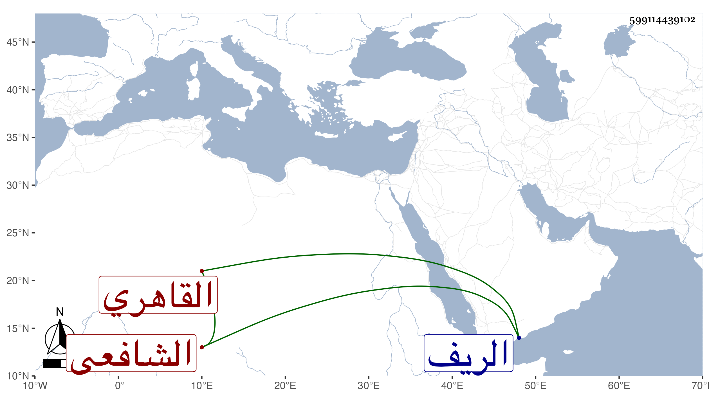

0902Sakhawi.DawLamic.ITO20230111-ara1.EIS1600.599114439102
Biography ID: 599114439102
182
محمد بن أحمد بن محمد بن محمد بن محمد بن عبد العزيز الشرف بن الشهاب ابن الصدر القاهري الشافعي الماضي أبوه ويعرف كسلفه بابن روق . ولد في ربيع الأول سنة خمس وثمانمائة فنشأ وحفظ القرآن وكتبا وأخذ عن ابن الفالاتي وابن قاسم والبدر حسن الأعرج ثم عن العبادي وأبي السعادات والمقسى والبكري وزكريا والجوجرى في الفقه وغيره وعن الثالث في الفرائض وعن التقى والعلاء الحصنيين والبدر السعدي الحنبلي في العربية وعن الحصنيين في المعاني والبيان وغيرهما ، وتردد للخيضري وتغري بردى الاستادار والبقاعي ، وتنزل في بعض الجهات كالإمامة بالفاضلية بل رغب له أبو السعادات البلقيني عن تدريس الحسامية ونظرها بأطفيح ، وتميز وشارك في أشياء وعمله في الفقه أكثر ولذا كان فيه أمهر ولكنه كثير العجلة قليل التحري في النقل والشهادة بحيث نقل في بعض دروس شيخه ابن قاسم عن الروضة كلاما وهمه فيه شيخه فمضى وقد كشط كلام الروضة وكتب موضعه ما وهم فيه وحضر به فعرف شيخه صنيعه فحط عليه ومقته وامتنع من الحضور عنده لذلك مدة مس غير واحد من شيوخه منه المكروه كابن الفالاتي بل الجوجري وجرأه البقاعي على غيرهما وتعدى حتى سمعته يقول لقائل وأنا أسمع مما أستغفر من حكايته لو قاله لي الشافعي ما قبلته وكذا قال أنا لا أرى شهود الجماعات ولولا أن الجماعة شرط في انعقاد الجمعة ما شهدتها وعلل ذلك بكون يشهدها من لا يحضر إلا لسرقة النعل فكيف ترجى الرحمة لمن هو معهم ، إلى غيرها من الخرافات التي يحمله عليها الخفة والجرأة وعدم المسكة وبالجملة فقد تناقص حاله من المشاركة في العلم والتفت إلى الزراعة وصارت أغلب أوقاته غيبة في الريف ويزعم أنه ليس في طائل ، وله غوغات أحسنها قيامه على ابن حجاج حتى أخرج من السابقية وكنت ممن أعانه بما كتبته في ذلك وصار هو المتكلم فيها ولم يحمد هوولا رفيقه في ذلك والله يحسن العاقبة .
